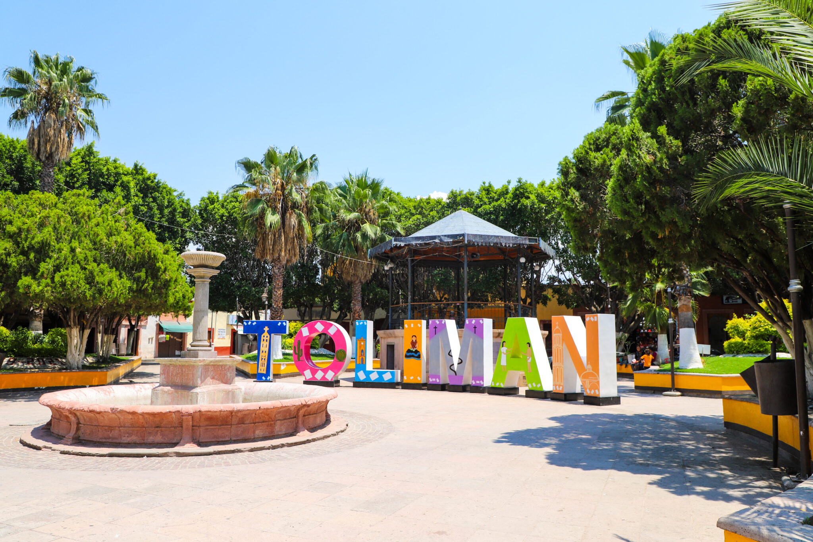
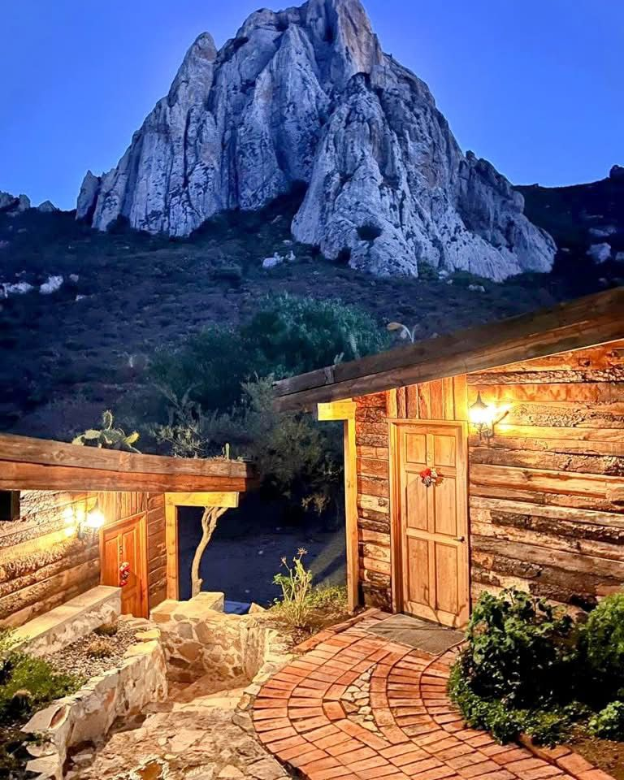
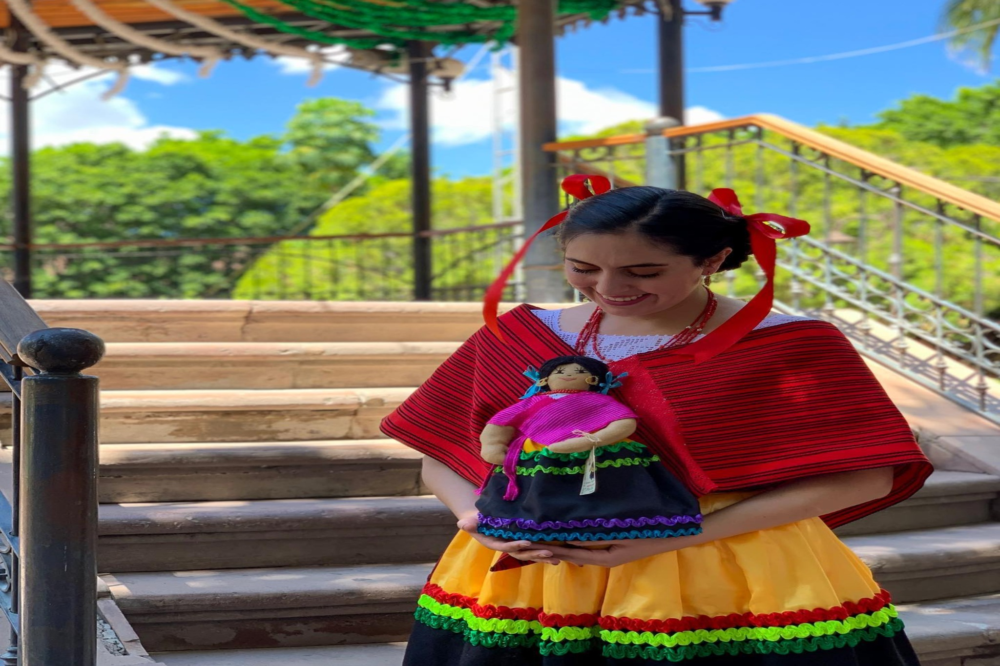
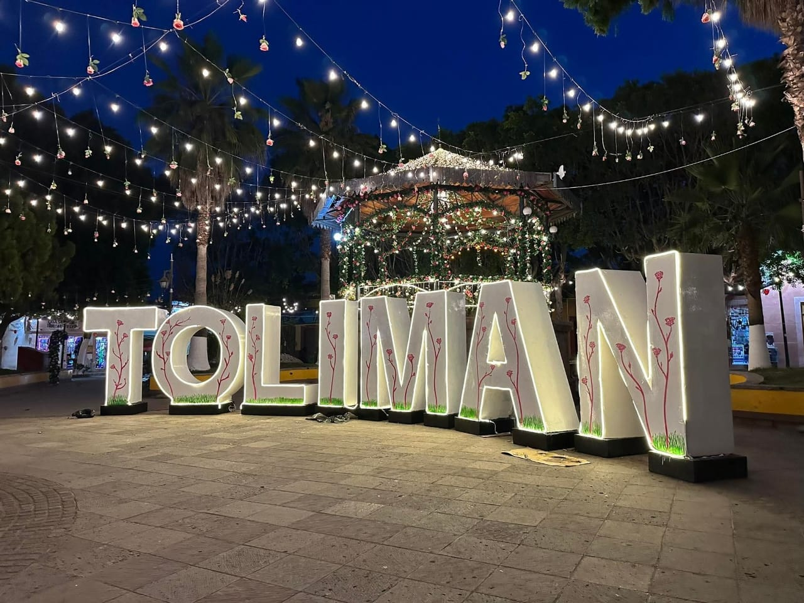
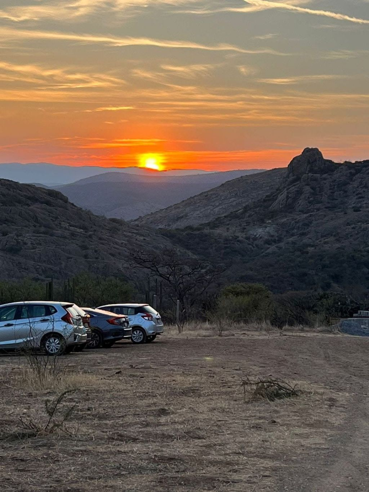

Raices y Rutas Virtuales
Turismo cultural y comunitario
Mbö D'enthi Nar Ñu Xantsú
Pa Ya Nso̱he Ya Mu̱i Nee Ya Hnini

Turismo cultural y comunitario
Pa Ya Nso̱he Ya Mu̱i Nee Ya Hnini






Este micrositio tiene como objetivo difundir la riqueza cultural, histórica y turística del municipio de Tolimán, promoviendo el turismo responsable y fortaleciendo la identidad de la comunidad otomí.
Seleccione una sección del menú para conocer más.